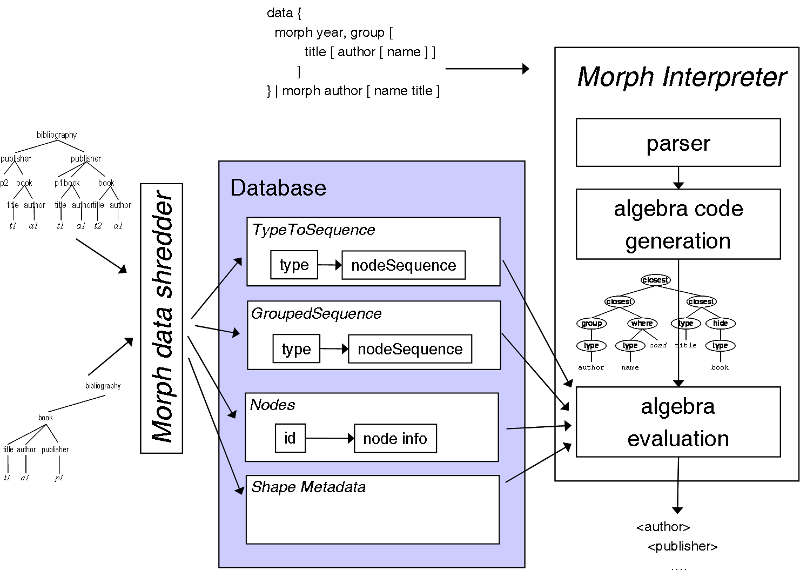

|
|
Download Morph
Flexible Querying for XML |
| Home | |
| Tutorial | |
| Demo | |
| Download | |
| Publications | |
| Curtis Dyreson | |
| Home | |
| Publications | |
| Projects | |
| Software | |
| Demos | |
| Teaching | |
| Contact me | |
Morph Dependencies
The Morph system is written entirely in Java and released as a NetBeans project. It has the following Java library dependencies (you'll have to download these separately).- Java 1.6 - Morph code uses generics so you'll need to download Java 1.5 or higher.
- Xerces SAX parser - The standard SAX parser has a well-knwon bug (runs out of memory on large files), so some other SAX parser has to be used to parse large files. We developed with Xerces 2.9.1. Add xercesImpl.jar to your NetBeans library.
- ANTLR - We developed the grammar using AntlrWorks 1.2.3. Add antlrworks-1.2.3.jar to your library. You will also need the Antlr runtime library, version 3.1.3 or higher.
- BerekelyDB - Morph uses BerkeleyDB as the back end data store. Download the BerkeleyDB Java Edition and add db.jar to your library.
Download Code
With the above JAR files in place, you can download a pre-release of version of Morph, which is available as a NetBeans project: Morph.tar.gz.
Using Morph
To run Morph, use the top-level Ant taks inrun.xml.
Execute the task "parse test" followed by "morph test". The first
task parses the data in xml/test.xml. The second
task evaluates the query in queries/author.
Modify each as you like. To re-parse the test data, you may with
to delete the database by executing the task "delete db".
A diagram illustrating the Morph architecture is given below.

Unimplemented Features
We are still debugging Morph and the following features are not yet fully tested and debugged.- data - data operator needs to be implemented, the current version queries all documents
- cloning in mutatation - cloning in a mutatation has a bug
- dynamic grouping - only static grouping is currently supported
- XQuery tranlsation - only LCAJoin and Type are supported, grouping is not
- verbose type analysis - give feedback to the user as to which types are joined in an LCA-join
- integer comparisons - not yet implemented for the where modifier
- value indexing - the where clause filters each node rather than pushing a selection into the type sequence generator, once we set up a value index then we can use BerkeleyDB to do a more intelligent search
Curtis E. Dyreson © 2009. All rights reserved.